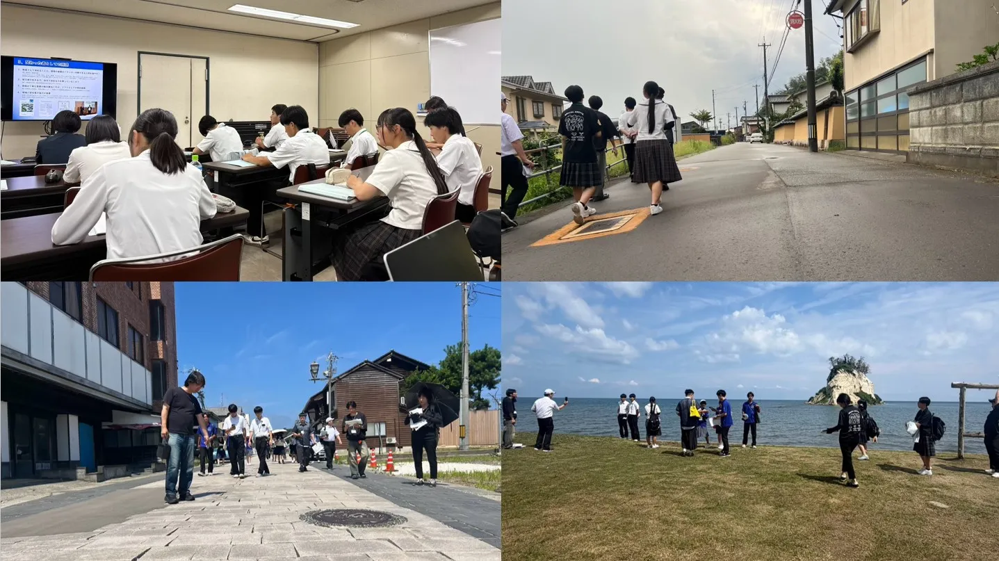

| 日程 | 形式 | 内容 | 参加校 |
|---|---|---|---|
| 6/9（火）・12（金） | 初回授業 | ガイダンス 大学での研究の紹介 | 宇和島東高校，宇和島南中等，大洲高校，大洲農業高校，天竜高校，南宇和高校，八幡浜高校 |
| 7/10（金）・15（水） | 第二回授業 | 視察前準備 課題テーマの設定 | 宇和島東高校，宇和島南中等，大洲高校，大洲農業高校，天竜高校，南宇和高校，八幡浜高校 |
| 8/1（土）–3（月） | 東北復興視察 | 東日本大震災の被災地の復興を見学 | 宇和島東高校，宇和島南中等，南宇和高校，八幡浜高校 |
| 8/7（金）–9（日） | 能登復興視察 | 令和6年能登半島地震の被災地の復興を見学 | 大洲高校，大洲農業高校，天竜高校，南宇和高校 |
教員・大学生コーチの自己紹介を行ったのち，東京大学博士課程1年の小関玲奈さんから研究の紹介を行いました。災害と都市形成史・居住地選択の関係をみる小関さんの研究は，高校生自らが地域の将来を考える防災地理部の活動と地続きであるといえます。地域の一人ひとりの理解や選択が，まち全体の災害への強さを形づくっていくことを改めて確認し，今年度の防災地理部の活動がスタートしました。
6/9（火）参加校：宇和島東高校，宇和島南中等，天竜高校，南宇和高校
6/12（金）参加校：大洲高校，大洲農業高校，八幡浜高校

愛媛県の南宇和高校，大洲高校，大洲農業高校と，静岡県の天竜高校とともに，能登半島地震の被災地を巡りました。
小松市や粟津温泉では、避難した後も生活を支え続けることや、普段からの地域のつながりが災害時に大きな力になることを学びました。輪島市や珠洲市では、火災や孤立、地形の変化など、災害の被害を実際の場所で見たことで、その深刻さを具体的に感じました。 内灘町では、液状化によって建物だけでなく土地や暮らしにも長く影響が残ることを知りました。実際に現地を訪れたことで、災害を知識として学ぶだけでなく、自分の住む地域でも起こり得ることとして考えることができました。
